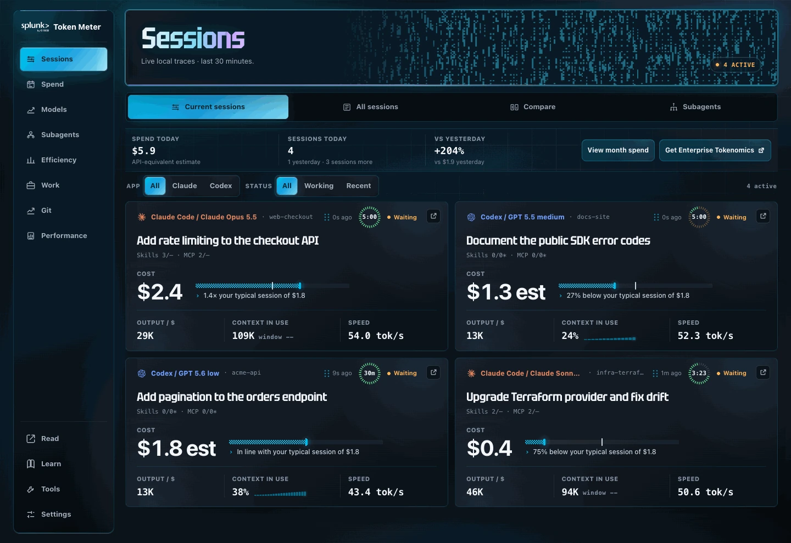
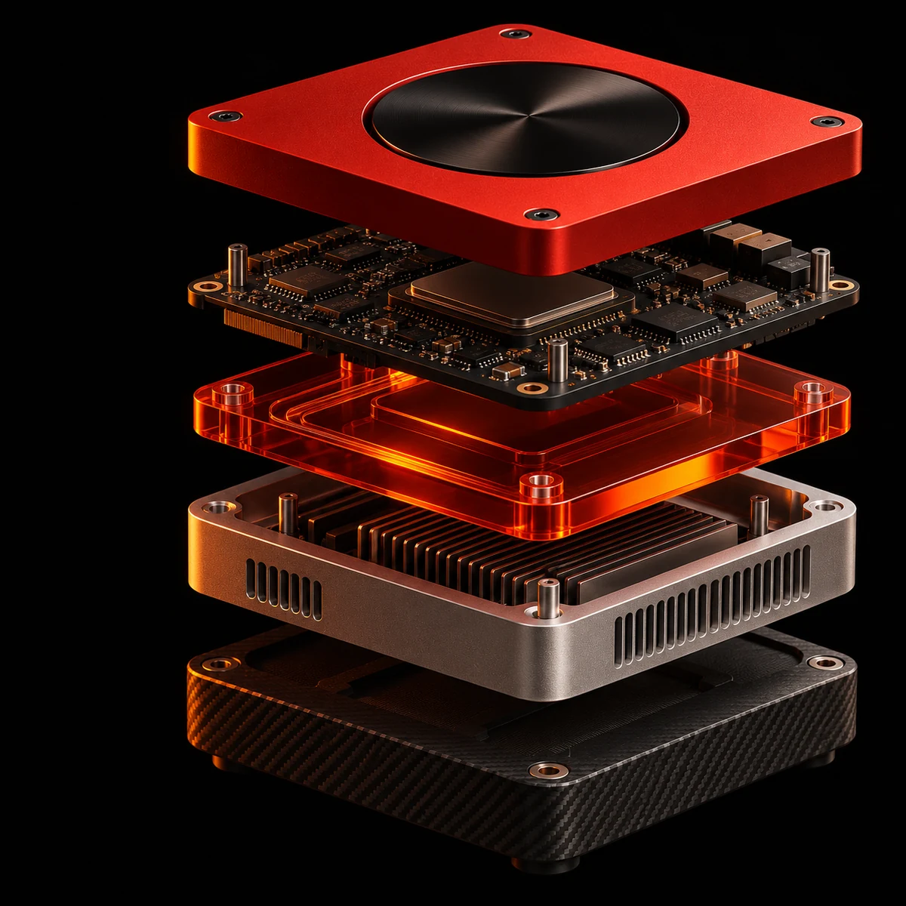
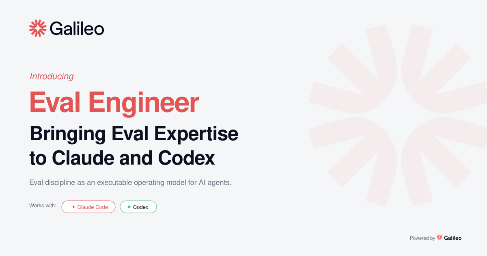
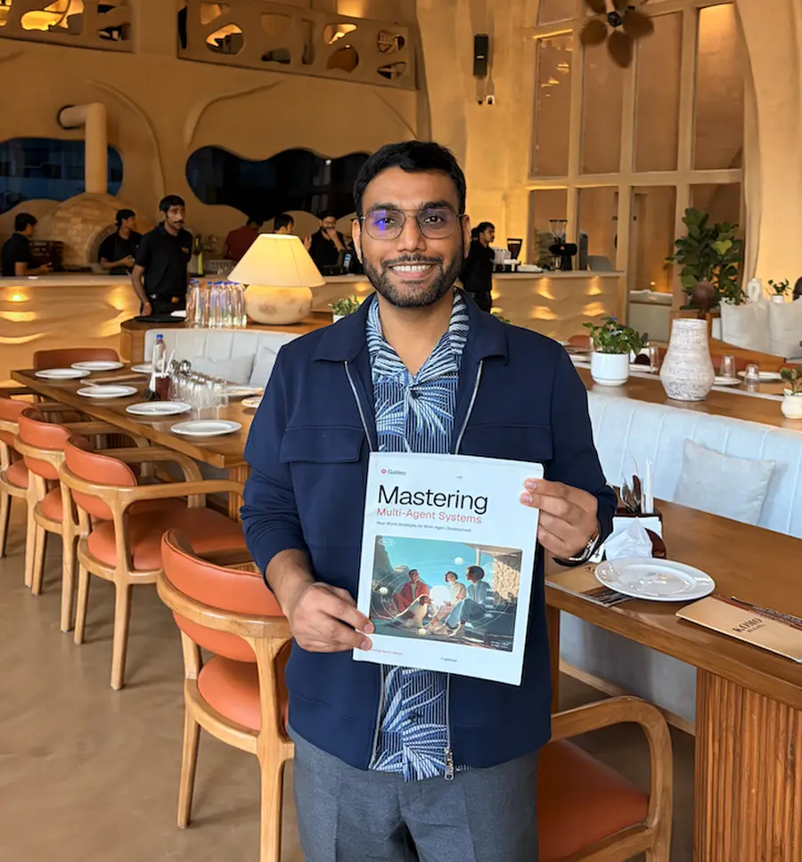
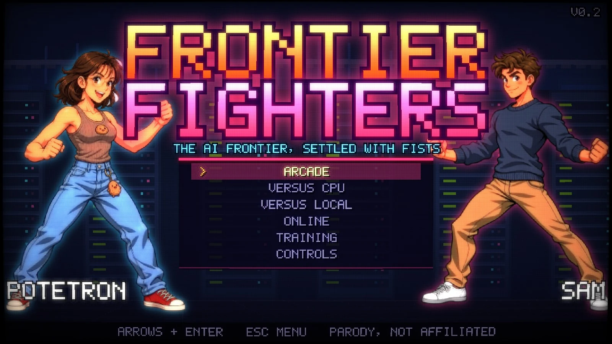

Token Meter
Cost and context for coding agents
Pratik BhavsarAI engineer at Cisco
I use AI to take products from prototype to production. I’m enjoying getting better at every step.
Explore the stack
All projects ↓

Cost and context for coding agents

Diagnose failures from production traces
53.23 on ChatRAG-Bench for BRAG-Qwen2-7B
30+ models across 500 support scenarios

Five books on evals, agents, and retrieval
Open source · Splunk
A local dashboard that shows what each coding agent session costs, how much context it uses, and how fast it runs.
Cost estimates carry an est label, and missing data stays marked as unavailable. The dashboard reads traces on your machine.
Claude Code · Codex
A skill package for debugging AI apps from production traces. It isolates a failure, scopes the fix, and checks whether the next run improved.
Research
Models keep getting smarter and cheaper. The hard part is knowing whether they work, what they cost, and how to fix them when they don’t.
500 multi-turn support scenarios across five industries. The benchmark checks whether the agent picked the right tools and whether it completed the customer's goals.
A traveler needs a lost card replaced before a trip and wants to confirm the next mortgage payment.
How often do models make unsupported claims when given a few pages, a chapter, or roughly a book of context?
Models
We fine-tuned four small models for retrieval-augmented generation. To fit our compute budget, we tested smaller mixes of training data against NVIDIA’s ChatQA reference.
Books
A field guide to deciding what good looks like for an AI system and testing for it in production.
Talks
Tokenomics and evaluation for AI agents. Token Meter ↗
Open-source benchmarks and five books on AI evaluation. Acquired by Cisco.
Founding engineer. Semantic search, NLP pipelines, and MLOps.
Employee #6. Open-source neural search.
Search, recommendations, and quantitative ML.
Built for fun
A 2D arcade fighter I built for the browser, with pixel-art parodies of the people building AI.
